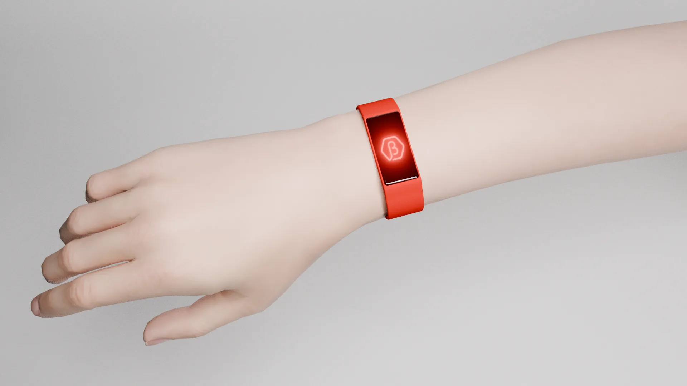
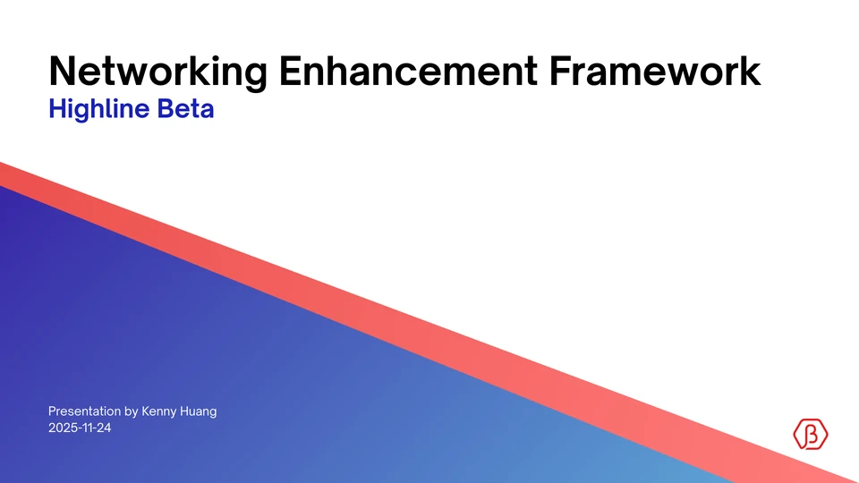

Networking Device & Framework
Highline Beta BetaLink
- Role
- Junior Product Designer
- Timeline
- Oct to Nov 2025
- Client
- Highline Beta
- Tools
- Figma, Fusion 360, Blender, PLA and TPU 3D printing
A sleeker, smarter way to network
BetaLink wristbands are NFC-powered wristbands that allow for instant LinkedIn connection with just one tap. Powered by a single NTAG216 NFC tag (no batteries needed), the wristbands are entirely rewritable by the user in case social media URLs change. BetaLink supports both Apple and Android phones. Current prototypes are fully functional and feature a custom-printed PLA shell alongside a TPU wristband.
Existing event wearables end up in one of two categories: either they are bulky and aesthetically unappealing networking devices, or they are sleek and simple wearable devices that only get used for attendance and are disposed of right after the event. BetaLink disrupts this current binary, offering a wearable device that is compact and aesthetically appealing, whilst retaining the functionality of existing networking devices.
The NFC Tools app is required for rewriting the NFC tag, free to download on the App Store and Google Play.
Pitch

PDF presentation, 15 MB
Networking Enhancement Framework
The full proposal presented to Highline Beta, from research and strategy to the BetaLink prototype.
Open the pitch deckPROBLEM STATEMENT
Investor networking at Highline Beta events requires a tedious, manual exchange of contact information.
How can networking between attendees and Highline Beta staff be enhanced? How might we identify, understand, and overcome these challenges?
Prototype
- 0Batteries needed
- 1NFC tag per band
- 2Working prototypes
- 3Steps to connect
Prototype AFlatface design
Prototype BCurvetop design
Interaction process
-
01Scan wristband -
02Receive notification -
03Connect on LinkedIn
Future conceptual renders
Ideation
-
Existing
Functional
Networking wearables with NFC, QR codes and digital features. Bulky, industrial and aesthetically unappealing.
e.g. Bizzabo Klik, Blendology
-
Design solution
BetaLink
An NFC wristband: compact, aesthetic and fully functional for digital networking.
-
Existing
Aesthetic
Small, unobtrusive wearables for events. They often have lights and QR codes, but no tap-to-connect.
e.g. Crowdpass, PixMob wristbands
The solution to Highline Beta's networking problem was not simply to “make a wristband”